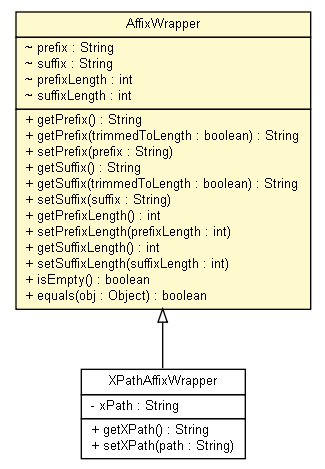

tud.iir.extraction.entity
Class AffixWrapper

java.lang.Object
 tud.iir.extraction.entity.AffixWrapper
tud.iir.extraction.entity.AffixWrapper
- Direct Known Subclasses:
- XPathAffixWrapper
class AffixWrapper
- extends java.lang.Object
A wrapper candidate is one prefix and one suffix with information about the maximum length.
|
Constructor Summary |
AffixWrapper(java.lang.String prefix,
java.lang.String suffix)
|
| Methods inherited from class java.lang.Object |
clone, finalize, getClass, hashCode, notify, notifyAll, toString, wait, wait, wait |
prefix
java.lang.String prefix
suffix
java.lang.String suffix
prefixLength
int prefixLength
suffixLength
int suffixLength
AffixWrapper
public AffixWrapper(java.lang.String prefix,
java.lang.String suffix)
getPrefix
public java.lang.String getPrefix()
getPrefix
public java.lang.String getPrefix(boolean trimmedToLength)
setPrefix
public void setPrefix(java.lang.String prefix)
getSuffix
public java.lang.String getSuffix()
getSuffix
public java.lang.String getSuffix(boolean trimmedToLength)
setSuffix
public void setSuffix(java.lang.String suffix)
getPrefixLength
public int getPrefixLength()
setPrefixLength
public void setPrefixLength(int prefixLength)
getSuffixLength
public int getSuffixLength()
setSuffixLength
public void setSuffixLength(int suffixLength)
isEmpty
public boolean isEmpty()
equals
public boolean equals(java.lang.Object obj)
- Overrides:
equals in class java.lang.Object